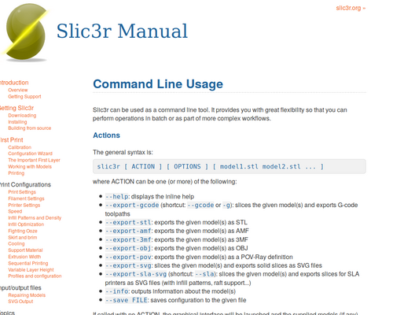

<div class="post-container flexflow-top-down"><div class="post-content"><div class="header flexflow-left-right" id="#Slic3r-batch-export"><div class="back_button"><a href="#proj_home"><i class="fas fa-backward"></i></a></div><div class="title"><div>Slic3r batch export</div></div></div><div class="meta"><div class="meta-content"><span><i class="fas fa-calendar-alt"></i> Mar 9, 2019</span></div><div class="meta-tags"><span><i class="fas fa-tags"></i> tag1 tag2 tag3</span></div><div class="meta-content"><span><i class="fas fa-clock"></i> 2 min</span></div></div><div class="caption_img"><p>Slic3r batch export</p></div><h3>What is it ?</h3><p>An easy tool to export gcode from slic3r</p><h3>background</h3><p>The option of slic3r command linx options wasn’t availabe under linux as described. The tools written to help perorming export 3mf -> save to stl -> export gcode as a batch operation.</p><h3>How to use:</h3><ul><li>Clone repo:</li><li>run under linux</li><li>git clone git@github.com:louiscklaw/slic3r_batch_export.git</li><li>pip install libxdo</li><li>update the file list in:</li><ul><li>file_3mf_list # for the list of 3mf files</li><li>WORKSPACE_DIR and PROJ_HOME</li><li>SLIC3R_ACTIVE_CONFIG for slic3r configuration wanted</li><li>SLIC3R_BIN_PATH for slic3r binary</li></ul><li>python batch_slic3r.py</li></ul><h3>How it works:</h3><div class="video-container"><iframe width="853" height="480" src="https://www.youtube.com/embed/5_bTsrpKEy0" frameborder="0" allow="accelerometer; autoplay; encrypted-media; gyroscope; picture-in-picture" allowfullscreen="allowfullscreen"></iframe></div><h3>Repoistory:</h3><a href="https://github.com/louiscklaw/slic3r_batch_export" target="_blank">https://github.com/louiscklaw/slic3r_batch_export<i class="fas fa-external-link-alt"></i></a><a class="back_to_proj_home" href="#proj_home" style="width: 100%;"><i class="fa fa-arrow-left"></i> back to project home</a></div></div>